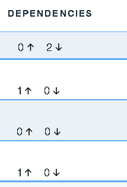

Managing task dependencies
You can make a task a prerequisite for other tasks. If a task is a prerequisite, dependent tasks cannot start, even if they are otherwise eligible, until the prerequisite task is resolved.
A task can have multiple dependent tasks and multiple prerequisite tasks. You can define dependencies for a task with any other task in the deployment plan. However, you cannot create circular dependencies. You cannot, for example, make a task dependent on a task that itself depends on the first task. By controlling task dependencies, you can ensure that events occur in their expected order.
To make a task a prerequisite for other tasks, complete the following steps:
- On the Deployment Plan Details page, select a task or task group, and then click Manage additional prerequisite. You can select multiple tasks and groups.
- In the Manage Prerequisites for Selected Tasks dialog box, in the Prerequisite tasks for selected tasks list, select the prerequisite task.
-
Click Save. Task dependencies are shown in the Dependencies column on the Deployment Plan Detail page. Up arrows indicate task prerequisites; down arrows indicate task dependencies. In the following figure, the first task does not have any prerequisites and has two tasks dependent on it. The second task has one prerequisite task and there are no tasks dependent on it.

To review or modify dependencies, select the task and then click Manage additional prerequisite. Use the Manage Prerequisites for Selected Tasks dialog box to modify or remove dependencies.
Parent topic: Tasks